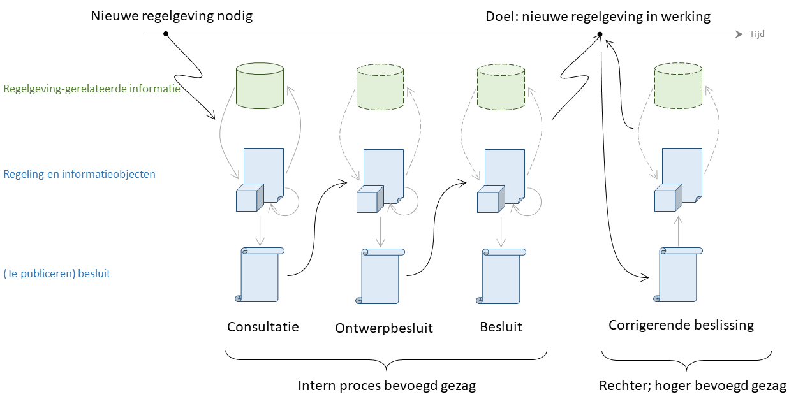
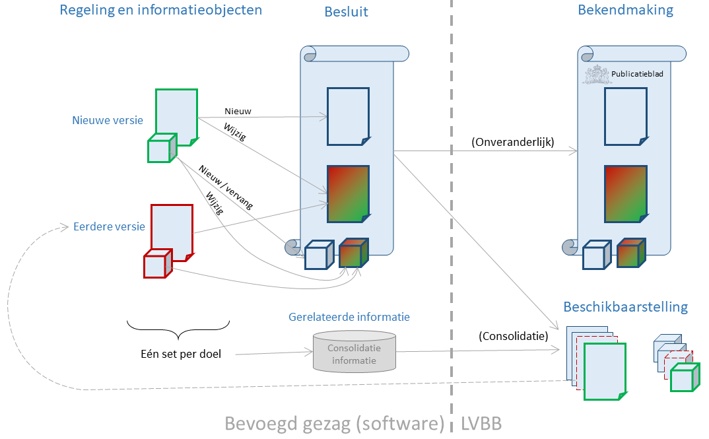

Geïntegreerd proces van bekendmaken en consolideren
Achtergrond
De standaard ondersteunt een geïntegreerd proces van bekendmaken en consolideren dat is geoptimaliseerd om zowel op een juridisch correcte manier tot regelgeving te komen als precies te weten hoe de regelgeving luidt of komt te luiden. Dit is een vereiste als de regelgeving niet op zichzelf staat maar de juridische basis vormt voor serviceverlening die tegelijk met de regelgeving wordt ontwikkeld. De optimalisatie bestaat eruit dat zowel het afleiden van de geldende regelgeving als het vinden van de van toepassing zijnde regelgeving zoveel en zo eenvoudig mogelijk geautomatiseerd kan worden.
De optimalisatie die voor de mogelijkheid tot automatisering wordt doorgevoerd bestaat eruit dat:
Een besluit is zodanig geschreven en opgezet, dat na bekendmaking ervan geautomatiseerd de consolidatie van regelgeving uitgevoerd kan worden.
Regelgeving-gerelateerde informatie kan synchroon gehouden worden met de geldende regelgeving door de uitkomst van de geautomatiseerde consolidatie te gebruiken; de opsteller van regelgeving-gerelateerde informatie hoeft dus niet het consolidatiemechanisme voor deze informatie te dupliceren.
Op elk moment in de tijd is er precies één versie van een regeling of informatieobject geldig, en de geldigheid is op een machine-leesbare manier vastgelegd.
De laatste twee punten hangen samen. Het juridisch instrumentarium staat besluiten toe die ertoe leiden dat op één moment in de tijd meerdere geldige versies van een regeling bestaan, waarbij andere factoren dan de tijd bepalen welke versie van toepassing is. Bij het gebruik van de regelgeving-gerelateerde informatie moet dan ook met die factoren rekening gehouden worden. Dat maakt het werken met die informatie complex. Het vereist ook een goede manier om die factoren te beschrijven op een manier die software kan begrijpen, wat in het algemeen een lastig probleem is en tot complexe software leidt. Dit wordt geïllustreerd bij de bespreking van het overgangsrecht.
Het geïntegreerd proces van bekendmaken en consolideren biedt het bevoegd gezag volledige beleidsvrijheid in de zin dat geen beperkingen opgelegd worden aan de inhoud van de regelgeving en besluiten. Het bevoegd gezag kan elke gewenst juridisch voorschrift of beleidsregel formuleren en in werking laten treden. De STOP-standaard stelt wel eisen aan de vorm waarin de regelgeving en besluiten worden vastgelegd. In de beschrijving van het proces wordt een terminologie gebruikt die afwijkt van het gebruikelijke juridische jargon.
Proces op hoofdlijnen
In de figuur is globaal het proces geschetst in de meest uitgebreide vorm. Niet elke stap zal altijd voorkomen.

Intern proces bevoegd gezag
Het proces start als het bevoegd gezag constateert dat er op enig moment in de toekomst nieuwe regelgeving nodig is. Een nieuwe versie van een (nieuwe of bestaande) regeling wordt opgesteld parallel met het maken van nieuwe versies van informatieobjecten en van de regelgeving-gerelateerde informatie. Zeker indien gebruik gemaakt wordt van gespecialiseerde software is de verwachting dat het opstellen of aanpassen van tekst, informatieobjecten en regelgeving-gerelateerde informatie gelijktijdig zal gebeuren. De software kan dan de relatie bewaken tussen tekst en gerelateerde informatie en/of tussen regelgeving-gerelateerde informatie, en de juridische borging daarvan in informatieobjecten.
Aan het begin van het proces is in het algemeen nog niet bekend wanneer de nieuwe regelgeving in werking zal treden. Het traject om van een eerste aanzet te komen tot een definitief besluit dat in werking kan treden kan langere tijd in beslag nemen, waarin de regeling, informatieobjecten en gerelateerde informatie nog meermalen aangepast kunnen worden. Daarbij zullen de aanpassingen aan de regeling, informatieobjecten en gerelateerde informatie vaak onafhankelijk van elkaar plaatsvinden. Een wijziging in de tekst hoeft bijvoorbeeld niet altijd te leiden tot een aanpassing van een informatieobject. Om toch gedurende het hele proces de samenhang tussen de tekst van de regeling, versies van de informatieobjecten en de regelgeving-gerelateerde informatie te behouden koppelt STOP alle aanpassingen aan een doel: aanpassing van regelgeving op één moment.
Een doel geeft de samenhang weer tussen de versies van regelingen en informatieobjecten die op hetzelfde moment geldig zullen zijn. Het is essentieel dat een integrale versie van de regelgeving gedurende het hele proces beschikbaar is, zelfs als die gedurende het proces nog meermalen kan veranderen. Het is anders niet doenlijk om tegelijk de bijpassende regelgeving-gerelateerde informatie automatisch te bepalen. Een juridisch acceptabele bepaling als Deze wet treedt in werking op een bij koninklijk besluit te bepalen tijdstip, dat voor de verschillende artikelen of onderdelen daarvan verschillend kan worden vastgesteld. houdt in dat pas bij het koninklijk besluit duidelijk wordt hoe de regelgeving er precies uitziet. Als de regelgeving-gerelateerde informatie daar rekening mee moet houden, dan moet geanticipeerd worden op regelgeving die uit elke mogelijke selectie van artikelen of leden kan bestaan, wat een explosie aan mogelijke versies van een regeling of informatieobject oplevert.
De verwachting is ook dat, bij gebruik van gespecialiseerde software om de regelgeving op te stellen, de regelgeving-gerelateerde informatie parallel of zelfs voorafgaand aan de regelgeving tot stand komt. Hoe geavanceerder de dienstverlening is die gebruik maakt van de regelgeving-gerelateerde informatie, des te meer zal die dienstverlening van invloed zijn op de structurering van de regelgeving. Als de dienstverlening bijvoorbeeld sterk afhankelijk is van de geografische gebieden waar juridische voorschriften gelden, dan zullen die gebieden bij voorkeur in een geografisch informatieobject vastgelegd worden. Het ligt daarom voor de hand om voor het interne proces bij het bevoegd gezag uit te gaan van het werken met integrale versies van regelingen en informatieobjecten.
STOP ondersteunt twee manieren om een regeling of een besluit te schrijven. De keuze die gemaakt wordt voor een nieuwe regeling dicteert de vorm van het besluit waarmee de nieuwe regeling bekendgemaakt wordt. Beide modellen voor een besluit zijn geschikt om een regeling later te wijzigen.
Opstellen en bekendmaken van besluiten
Op een aantal momenten zal het bevoegd gezag de nieuwe regelgeving willen (of moeten) delen zodat anderen kennis kunnen nemen van de (toekomstige) regelgeving. Daartoe wordt de nieuwe regeling opgenomen in één of meer besluiten. De standaard onderkent alleen de uniforme openbare voorbereidingsprocedure waarin voorafgaand aan het definitieve besluit een ontwerpbesluit gepubliceerd kan worden, als dat wettelijk is voorgeschreven. Uitbreiding naar ander type besluiten is mogelijk. Elk besluit wordt beschouwd als een zelfstandige entiteit. Als een definitief besluit gebaseerd is op een ontwerpbesluit dan wordt het niet gezien als een volgende versie van het ontwerpbesluit; de eerste versie het definitief besluit ontstaat dan door het overnemen van de inhoud van de laatste versie van het ontwerpbesluit.
Voor de besluiten die de LVBB kan publiceren wordt per besluit het geïntegreerde proces van bekendmaken en consolideren gevolgd.

In het algemeen zal een besluit (het wijzigen van) alle regelingen en informatieobjecten beschrijven die in het interne proces van het bevoegd gezag in samenhang worden beschouwd. Voor een overzicht van de meestgebruikte manieren zie het opnemen van regelgeving in een besluit. Een nieuwe regeling en een nieuw of vervangen informatieobject wordt geheel opgenomen in het besluit, een wijziging van een bestaande regeling of informatieobject wordt via het STOP-renvooimechanisme in het besluit opgenomen.
De geldigheidsinformatie die geassocieerd is met het doel, zoals de inwerkingtreding, moet opgenomen worden in de tekst van het besluit. De standaard biedt ondersteuning voor verschillende inwerkingtredingsbepalingen, waaronder het regelen van de inwerkingtreding via een apart besluit.
Naast de (wijzigingen van) regelgeving en geldigheidsinformatie bevat een besluit ook andere informatie, zoals een motivatie en toelichting op wat gewijzigd of nieuw is. In de huidige juridische praktijk kan het besluit ook zelf voorschriften bevatten voor bijvoorbeeld overgangsrecht. Dat wordt in het geïntegreerd proces van bekendmaken en consolideren beperkt ondersteund, omdat overgangsrecht dat in een besluit opgenomen is in het algemeen leidt tot het tegelijkertijd geldig zijn van meerdere versies van een voorschrift. Zie de bespreking van het overgangsrecht voor het gebruik van overgangsrecht in dit proces.
Het besluit wordt ter bekendmaking aan de LVBB geleverd, die ervoor zorgt dat het besluit onveranderd gepubliceerd wordt in de opmaak van het gekozen publicatieblad. Het is de verantwoordelijkheid van het bevoegd gezag dat de inhoud van het besluit onveranderlijk is vanaf het moment dat het besluit is vastgesteld tot en met de aanlevering aan de LVBB, en (behoudens amendementen) vanaf het ter vaststelling aanbieden tot en met de vaststelling zelf. De LVBB zorgt ervoor dat de inhoud van het besluit onveranderlijk is tussen de aanlevering en de bekendmaking. Omdat het voor informatieobjecten in het algemeen moeilijk is aan te tonen dat de inhoud ongewijzigd is, stelt de standaard als eis dat de informatieobjecten zelf (als bestand/serialisatie) als onderdeel van het besluit onveranderlijk moeten zijn.
Bij levering aan de LVBB wordt ook de informatie geassocieerd met het doel meegeleverd. Deze informatie wordt niet bekendgemaakt en hoeft dus niet aan de juridische eisen voor bekendmakingen te voldoen. Het wordt alleen gebruikt om tot geconsolideerde regelgeving te komen. Naast informatie over doelen kan ook andere gerelateerde informatie meegeleverd worden; zie daarvoor de specificaties van het bronhouderkoppelvlak. Via het bronhouderkoppelvlak is de informatie over de consolidatie en over versies van regelingen en informatieobjecten uit bekendgemaakte besluiten op te halen, om zo de basis te vormen van volgende (wijzigings-)besluiten.
De standaard is zo opgezet dat op basis van het bekendgemaakte besluit en de consolidatie-informatie de geconsolideerde regelgeving geautomatiseerd afgeleid kan worden. Dat is niet altijd het geval, bijvoorbeeld als twee besluiten dezelfde regeling wijzigen maar geen rekening houden met elkaar; dit wordt in de context van consolideren samenloop genoemd. Zelfs als de besluiten elk een ander deel van de regeling wijzigen is het samenvoegen van de wijzigingen om te komen tot één geldige versie van de regeling de verantwoordelijkheid van het bevoegd gezag. Het bronhouderkoppelvlak zal melden dat de geautomatiseerde consolidatie niet helemaal uitgevoerd kan worden. De standaard voorziet erin dat het bevoegd gezag kan aangeven wat de oplossing van de samenloop is. Als de samenloop ontstaat door bekendmaking van besluiten die ook juridisch onafhankelijk van elkaar zijn dan is voor het oplossen van de samenloop geen apart besluit nodig. Als de besluiten elkaar juridisch raken, dan is dat wel het geval.
Na de bekendmaking van het besluit
Na bekendmaking van het besluit zijn er verschillende manieren waarop er nog nieuwe versies van een besluit kunnen ontstaan:
Het bevoegd gezag kan erachter komen dat de bekendgemaakte versie van het besluit geen goede weergave is van het besluit, bijvoorbeeld omdat bij de vaststelling van het besluit amendementen zijn aangenomen die niet in de bekendgemaakte versie zijn verwerkt.
Als beroep is toegestaan kan een beroepsorgaan (zoals een rechter) een uitspraak doen die gevolgen heeft voor de geldigheid (bijvoorbeeld opschorten of vernietigen) of inhoud van de regelgeving (gedeeltelijke vernietiging, aanpassing van de regelgeving via de uitspraak). Het beroepsorgaan legt de uitspraak niet via de STOP-standaard vast. Als de uitspraak gevolgen heeft voor de status van de bekendgemaakte besluiten en/of voor de geconsolideerde regelgeving, dan dient het bevoegd gezag het effect van de uitspraak van het beroepsorgaan vast te leggen en via de LVBB beschikbaar te stellen.
In sommige gevallen kan een hoger bevoegd gezag een besluit van een lager bevoegd gezag corrigeren, zoals bij de reactieve interventie uit de Omgevingswet. Als dat ondersteund wordt door het bronhouderkoppelvlak kan het hogere bevoegd gezag haar besluit in STOP opstellen zodat een nieuwe versie van het besluit ontstaat die als zodanig door de geautomatiseerde consolidatie verwerkt kan worden. Een alternatief is dat dezelfde procedure wordt gebruikt als voor beslissingen van een beroepsorgaan: het hoger bevoegd gezag maakt een eigen besluit bekend waarin beschreven staat hoe het besluit gewijzigd moet worden, maar niet op een manier die door de geautomatiseerde consolidatie verwerkt kan worden. Het lagere bevoegd gezag legt het effect van het besluit van het hoger bevoegd gezag vast en stelt het via de LVBB beschikbaar.
De standaard ondersteunt een manier van formuleren van een nieuwe versie van een besluit vanwege een rectificatie of een uitspraak van de rechter op een manier die door de geautomatiseerde consolidatie verwerkt kan worden.
Daarnaast bestaat de mogelijkheid dat het bevoegd gezag, en beroepsorgaan of een hoger bevoegd gezag de geldigheid van het besluit wijzigt, bijvoorbeeld door intrekking of vernietiging van het besluit, door schorsing of door aanpassing van de inwerkingtredingsbepalingen. Het aanpassen van de inwerkingtredingsbepalingen leidt tot een nieuwe versie van het besluit zoals zojuist beschreven. Intrekking, vernietiging of schorsing wordt in STOP niet via de specificatie van een nieuwe versie van het besluit doorgegeven maar via een aanpassing van de status van het besluit. In de tekst van een STOP-besluit heeft de tekst waarin de intrekking, vernietiging of schorsing beschreven staat hetzelfde karakter als een inwerkingtredingsbepaling.
Regeling-gerelateerde informatie
De regeling-gerelateerde informatie wordt naar verwachting tegelijk met de regelingen en informatieobjecten bijgewerkt. In het algemeen bevat de tekst van een regeling veel meer informatie dan in de regeling-gerelateerde informatie op een machine-leesbare manier wordt vastgelegd. De verwachting is daarom dat de tekst van de regeling vaker zal wijzigen dan de regeling-gerelateerde informatie, dus dat de regeling-gerelateerde informatie geldt voor meer dan één versie van de regeling.
Het bronhouderkoppelvlak ondersteunt zowel het gelijktijdig als op een later tijdstip aanleveren van regeling-gerelateerde informatie die volgens de STOP-standaard of een aantal andere standaarden is opgesteld.
Revisies
In STOP bevat zowel een regeling als een informatieobject naast juridisch relevante informatie (zoals tekst of de inhoud van het informatieobject) ook gerelateerde informatie (zoals metadata die iets zegt over de auteur). Als die gerelateerde informatie wijzigt, bijvoorbeeld omdat het in eerste instantie incorrect is aangeleverd, dan leidt dat tot een nieuwe versie van de regeling of informatieobject die op elk moment na de bekendmaking van het besluit met de originele versie aan de LVBB aangeleverd kan worden. Deze aanpassing vereist geen besluit, maar de manier waarop de aanpassing opgesteld moet worden is gelijk aan de manier waarop de aanpassing in een wijzigingsbesluit zou landen.
In STOP wordt een versie een revisie genoemd als die juridisch gelijk is aan een eerder bekendgemaakte versie en die alleen gerelateerde informatie wijzigt.